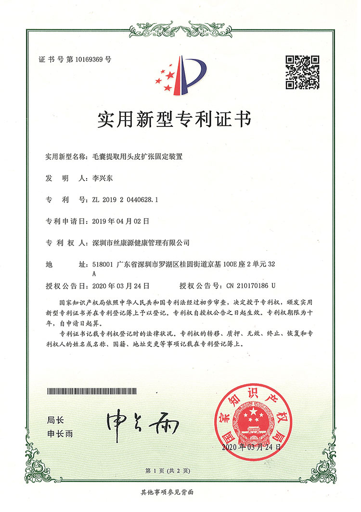

Our patented technology for superior hair transplant results
During a microneedle hair transplant, individual follicular units are loaded into the hollow tip of our proprietary implant pen and placed directly into the pre-designed recipient area. The pen's 360 degree rotating barrel matches each graft to your natural hair growth direction, which significantly reduces tissue trauma, minimizes post-procedure discomfort, and virtually eliminates the risk of damaging delicate follicles during placement.
0.6-1.0mm needle diameter
Rapid healing, minimal downtime
Return to daily life quickly
20-30% more grafts per cm squared
Matches natural hair direction
Comprehensive solutions for every need
Follicular Unit Extraction (FUE) is the gold standard in modern hair restoration. Individual follicular units are harvested from the donor area using precision micro-punches, then implanted with our microneedle pen for natural-looking results with virtually no visible scarring.
Follicular Unit Transplantation (FUT) involves harvesting a strip of donor tissue, which is then meticulously dissected into individual follicular units. While FUE is our primary recommendation, FUT remains a viable option for patients requiring maximum graft counts in a single session.
Our no-shave approach lets you undergo a full hair transplant without shaving your head. The surgical team carefully extracts and implants follicles between your existing longer hairs, making the procedure virtually undetectable to colleagues, friends, and family.
See how our technologies compare side by side
| Feature | Microneedle FUE (Recommended) | Traditional FUE | FUT |
|---|---|---|---|
| Incision Size | 0.6-1.0mm | 1.0-1.5mm | Linear scar |
| Recovery Time | 1-3 days | 5-7 days | 7-14 days |
| Density | 20-30% higher | Standard | Standard |
| 360 Degree Rotation Control | ✓ | ✗ | ✗ |
| Tissue Impact | ✓ Minimal | Moderate | Significant |
| First Hair Wash | 24 hours | 3-5 days | 7-10 days |
| Scarring | Virtually invisible | Minimal dot marks | Linear scar |
| Graft Survival Rate | 98%+ | 90-95% | 90-95% |
| Discomfort Level | Minimal | Low-Moderate | Moderate |
14 patents representing years of innovation and research

Our flagship implant pen with 360 degree rotating barrel for precise directional control during graft placement.

Smart follicle spacing algorithm that optimizes density and natural-looking growth patterns.

Patented tissue stabilization system that ensures precise, atraumatic follicle extraction.

Specialized instrument optimized for safe harvesting of coarser facial hair follicles.

Specially designed forceps that grip follicles securely without applying damaging pressure.

Precise depth calibration for consistent graft placement at the optimal implantation level.

Proprietary handling protocol that shields grafts from mechanical stress throughout the entire procedure.

Ultra-fine blade system that creates minimal entry wounds for faster healing and reduced discomfort.

Low-impact harvesting technique that preserves the structural integrity of every extracted follicle.

Temperature-controlled storage solution that maintains maximum follicle viability from extraction to implantation.

Refined dissection technique that isolates individual grafts without harming surrounding tissue.

Patented system that ensures each graft is positioned to match the unique growth angle of surrounding hair.

Data-driven spacing protocol that maximizes visual fullness while preserving healthy blood flow between grafts.

Evidence-based aftercare system designed to minimize healing time and promote strong, healthy graft growth.
Your complete 9-step journey to natural hair restoration
Your surgeon evaluates your scalp, grades your hair loss, and assesses donor area follicle density to confirm you're a good candidate for transplantation.
Your surgeon hand-draws a customized hairline that complements your facial proportions, age, and personal preferences. We plan every implantation zone and calculate the exact graft count needed.
Standard blood work and coagulation tests to ensure there are no medical concerns. Your safety is our first priority.
Targeted numbing of the donor and recipient areas. You'll stay awake and comfortable throughout, with no pain during the procedure.
Individual follicular units are carefully extracted from the donor area at the back of your head using precision micro-punches that leave only tiny, virtually invisible marks.
Our technicians carefully clean, sort, and store harvested follicles in a temperature-controlled nutrient solution to keep them at peak viability until implantation.
Healthy follicles are meticulously placed one by one using our patented microneedle pen. The 360 degree rotation ensures each graft matches the natural growth direction of surrounding hair.
The scalp is gently cleaned and fitted with a light protective dressing. We make sure you're comfortable and provide detailed washing instructions before you leave.
You'll receive comprehensive written instructions on washing, daily activities, and what to expect during recovery. We schedule follow-up check-ins to monitor your progress every step of the way.
See the transformations our patients have achieved


Moments captured with our satisfied patients

Posing with our medical team after successful procedure

Celebrating fantastic results with our doctors

Another satisfied patient shares their joy

Patient with our specialist before discharge

Happy patient with Dr. Chen post-treatment

Excited patient showing their new look

Patient delighted with their transformation

Patient starting fresh with amazing results
Hear from our satisfied patients around the world
"I'm a biomedical engineer, so I researched every technical detail before choosing a clinic. The 360-degree rotating implant pen was the deciding factor for me. Watching the surgeon twist each graft into exactly the right angle during my procedure was incredible — no other clinic I consulted had that level of directional control. The results speak for themselves; even my hair stylist can't tell where the native hair ends and the transplanted hair begins."
"I had a Sapphire FUE procedure done in Istanbul three years ago, and I knew within weeks it was subpar. The density was weak and the direction at the hairline looked pluggy. When I compared notes with Barley's microneedle system, the difference was obvious: single-step incision-and-placement instead of the two-step slit-plus-forceps method. My revision surgery here fixed every flaw, and the 0.6mm wounds healed so fast I was back in the office on day four."
"Fourteen registered patents. That's what sold me. I work in intellectual property, so I know how rigorous the patent examination process is, especially in medical devices. The depth-control mechanism, the cold-chain graft storage system, the rotating barrel — each piece of equipment has been engineered and tested, not cobbled together from generic surgical tools. I got 2,800 grafts and the clinic measured my survival rate at 99.1% at month four."
"The 24-hour wash promise sounded like marketing fluff to me, but it's real. I showered and gently shampooed the next morning exactly as instructed, and the grafts stayed perfectly in place. With my previous transplant at a different clinic, I couldn't touch water for six days and the crusting was awful. The micro-incision size — 0.6mm instead of 1.2mm — is the real game-changer here; the body just doesn't react the same way to tiny pinpricks."
"I have a scar on my scalp from an old childhood accident, and two clinics told me nothing could grow there. Barley's team used a specialized punch size of 0.8mm calibrated for scar tissue and applied their FGF dual-factor protocol to boost vascularization in the scar bed. Eight months later, hair is growing perfectly through that scar. I can wear my hair short now without a hat, which I haven't done in thirty years."
"The implant pen versus traditional forceps is like comparing a fountain pen to a crayon. I observed the implantation phase in a mirror during my session — every graft was deposited with a single, clean motion straight down through the needle. No prying tissue open with tweezers, no fumbling to seat the graft at the right depth. The density I achieved in one session here would have required two sessions anywhere else I researched."
Our state-of-the-art facilities meet international healthcare standards

Begin your consultation journey

Sterile, precision-equipped environment

One-on-one with your surgeon

Rest comfortably before discharge

Welcoming and professional

Our full-service facility
Common questions about our microneedle hair transplant technology
Click to copy contact information
15810155700
+86 13730143529
hairtransplant@qq.com

Everyone's hair loss journey and solution are unique due to a variety of factors. Our hair restoration experts will assist you in determining the root cause and the best solution for your hair restoration plan. If you have any questions, please ask; we are happy to assist.